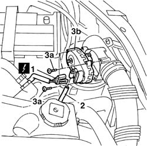

1080C18 E'G.R. system intake AIR MODULATOR . - R.R.
- Path
- Procedures > 10 ENGINE > 1080 EMISSION CONTROL SYSTEM > 1080C exhaust gas recirculation system (e.g.r.) > 1080C18 E'G.R. system intake AIR MODULATOR . - R.R.
- Kind
- repair procedure (removal / refitting; the operation number is the code)
- Applies to
- all engines; all production periods
- Interactive page
- https://sloeber94.github.io/elrnDB-fDbl/en/#/2584473
Applies to: all engines; all production periods
 Removing
Removing
 Refitting
RefittingDisconnect the battery negative terminal.
1. Disconnect the air modulator electrical connection.
2. Disconnect the vacuum air line from the fitting on the modulator device.
3. Unscrew bolts (3a) and remove the air modulator device on intake (3b).
 | Name | Connector |
|---|---|---|
1 | Butterfly casing solenoid valve | L62 |

Applies to: all engines; all production periods
Refitting
RemovingFit the air modulator device on the intake to the air cleaner case and tighten the bolts.
Connect the vacuum air pipe to the fitting on the modulator.
Connect the air modulator electrical connection.
| Name | Connector |
|---|---|---|
1 | Butterfly casing solenoid valve | L62 |
Connect the battery's negative terminal.